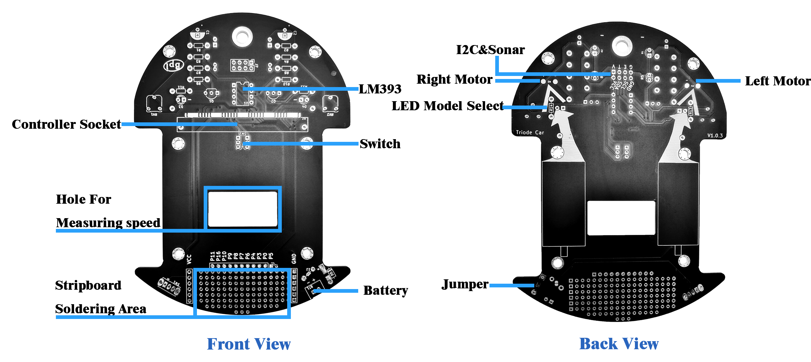
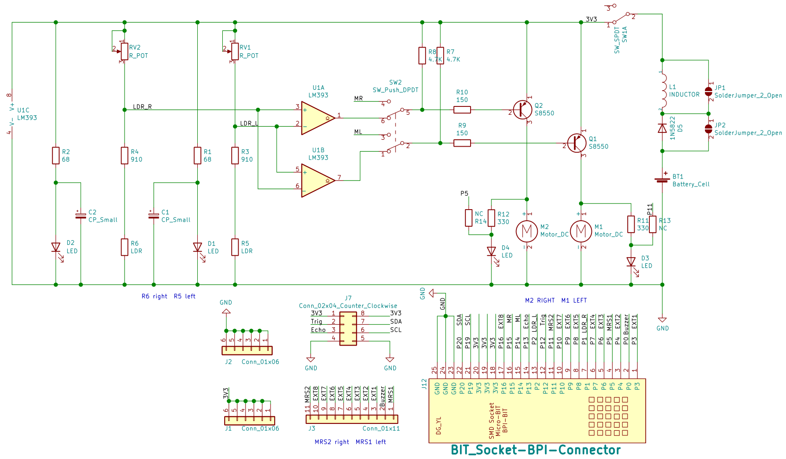

硬件介绍
2022-12-02
硬件参数
- 供电电压：3.6V~3.7V DC(3.6V~3.7V锂电池)
- 光敏电阻巡线(模拟值)×2 (P1 P2)
- SR04、SR04P超声波接口(5V)×1 (Trig:P12 Echo:P14)
- I2C接口(3.3V）×1
- IO扩展口 ×2 (P5 P0 P3 P4 P6 P7 P8 P9 P10 P16 P11)
- 减速电机×2 (P14 P15)
- 电机空载转速（3V）：90rpm
- 电机驱动方式：PWM电机驱动
- 扩展M3螺丝孔×6（支持乐高接口）
硬件接口示意

在Triode-Car的上面，有很多特殊设计：
- 在Triode-Car正前方，有两个螺丝孔，可以用来固定避障传感器或者巡线传感器等传感器。
- 在可调电阻旁，有两对特殊的电阻，R11和R13，R12和R14，如果选择焊接R11和R12，LED会自动显示电机的状态，是正转还是停止，如果选择焊接R13和R14，LED会变成可编程的LED灯，P11控制左边的LED（D3），P5控制右边的灯（D4）。
- Triode-Car上有为了手动焊接特殊设计的焊盘（Controller Socket标记位置），通过这样的设计，手动焊接Bit底座时更方便，并且使用时如果想快速确认Pin的位置，不用需要反复确认原理图与引脚号。
- 在Bit底座后面，有一个切换按钮，可以切换两种控制方式：IC切换和Bit切换。
- 在Triode-Car中间偏下部分，有一个30*15mm的方形孔，作用是给测速传感器留下空间。添加完测速传感器之后，可能电池盒的位置被占用，此时我们推荐您使用铜柱，塑料板等，将电池盒垫高。推荐测速传感器
- 在Triode-Car正下方，有一些可以随意焊接的洞洞，洞洞的最左侧一条连接的是电源的正极，最右侧一条则连接的是负极，最上面一排则放置了一些IO供使用，可以在这个区域添加一些传感器或者蜂鸣器等，让您的小车更加全能。当然，添加之后可能会出现供电不足的情况，建议使用电流更强大的锂电池。
功能引脚定义
| Function | web:bit GPIO |
|---|---|
| Wheel(Left) | P14 |
| Wheel(Right) | P15 |
| ultrasonic (Trig) | P12 |
| ultrasonic (Echo) | P13 |
| Line Detecting(Left) | P2 |
| Line Detecting(Right) | P1 |
| Speed Detection(Left) | P11 |
| Speed Detection(Right) | P5 |
原理图

产品标配清单
- 小车PCB ×1
- 电阻若干
- Bit底座 ×1
- LM393 ×1
- 电机 ×2
- 前轮 ×1
- 指示灯 ×4
- 可调电阻 ×2
- 电容 ×2
- 三极管 ×2
- 开关 ×2
- 地图/说明书 ×1
- 螺丝若干